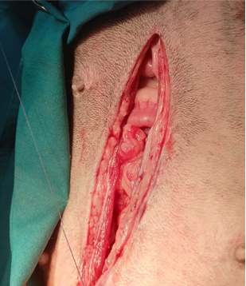

Preparación prequirúrgica
- Realizar hemograma y bioquímicas
- Evaluar y corregir estado de hidratación, balance electrolítico (hipofosfatemia) y ácido base (alcalosis secundaria a la pérdida de líquidos gástricos), cuando sea posible
- Ayuno de mínimo 8-12 horas, dependiendo del procedimiento
Incisión línea mediana ventral
Inicialmente, incida en la piel utilizando un bisturí. A continuación, incida en el tejido subcutáneo para exponer la unión entre las vainas del músculo recto abdominal. Finalmente, traccione dorsalmente la pared abdominal, utilizando una pinza diente de ratón, para realizar una punzoincisión con bisturí segura sobre la línea alba. En seguida, amplíe la apertura, tanto en dirección caudal como craneal, utilizando una tijera mayo. Continúe este proceso hasta que la longitud de la incisión en la línea alba coincida con la de la incisión inicial en la piel.
Revisión del tracto gastrointestinal
Realice una inspección de la cavidad abdominal y sus órganos. Palpe toda la extensión del intestino, desde el colon hasta el estómago.
Exponer estómago
Exponer estómago y aislarlo con esponjas de laparotomía, para minimizar el riesgo de contaminación con el contenido estomacal

Suturas sujeción
Coloque suturas de sujeción, estas deben abarcar todo el grosor de la pared, y deben colocarse uno en cada extremo de la incisión que se pretende realizar. Utilice sutura monofilamento 2-0 o 3-0. Esto facilita la manipulación del estómago y disminuye la probabilidad de contaminación
Incisión estómago
Utilice las suturas de sujeción para generar tensión, y realice una incisión punzante con bisturí en una zona poco vascularizada del estómago, a favor de las fibras musculares, entre curvatura mayor y menor, lejos del píloro. Después, extienda la incisión utilizando tijeras Metzembaum.
El estómago también puede ser sujetado por el asistente. La longitud de la incisión depende del tamaño del cuerpo extraño que se desea extraer.
Retirar cuerpo extraño
- Retirar cuerpo extraño utilizando pinzas Allis
- Todos los instrumentos utilizadas en el lumen del estómago deben ser removidos del campo quirúrgico.
Gastrorrafia
1. Primero, realice un patrón simple continuo que involucre las capas serosa, muscular y submucosa. Se recomienda utilizar sutura monofilamento absorbible 3-0 o 4-0.
Gastrorrafia
2. Seguido al patrón simple continuo, realice un patrón invaginante cushing, que involucre las capas serosa y muscular. Se recomienda utilizar sutura monofilamento absorbible 3-0 o 4-0.
Lavado de cavidad abdominal
Al finalizar la etapa limpia contaminada, los instrumentos utilizados deben ser removidos y los guantes estériles se deben cambiar. Después, realice un lavado peritoneal con abundante suero estéril atemperado (37-39 grados)
Cierre cavidad abdominal
1. En primer lugar, realice un patrón simple continuo con sutura monfilamento absorbible que involucre los músculos del abdomen.

Cierre cavidad abdominal
2. Seguido del músculo, prosiga suturando el tejido subcutáneo con un patrón simple continuo y sutura absorbible.


Cierre cavidad abdominal
3. Finalmente, realice un patrón de sutura que genere aposición de la piel. Recuerde que la sutura de la piel debe estar libre de tensión.
Posibles complicaciones
- Vómito -Anorexia -Peritonitis secundaria a fugas o pérdidas intra o postoperatorias -Úlceras en zonas de anastomosis -Obstrucción del flujo de salida –Pancreatitis -Pérdida de motilidad gastrointestinal -Dehiscencia